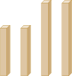

4. 사각형
여러 가지 사각형을 알아볼까요
수학
98~99
쪽
수학 익힘
73
쪽
주어진 막대로 만들 수 있는 사각형을 모두 찾고, 그 까닭을 써 보세요.

예
같은 길이의 막대가 2개씩 있으므로 마주 보는 두 변의 길이가 같은 사각형을 만들 수 있습니다.
평행한 변이 있는 사다리꼴을 만들 수 있습니다.
마주 보는 두 변의 길이가 같은 평행사변형을 만들 수 있습니다.
네 각이 모두 직각인 직사각형을 만들 수 있습니다.